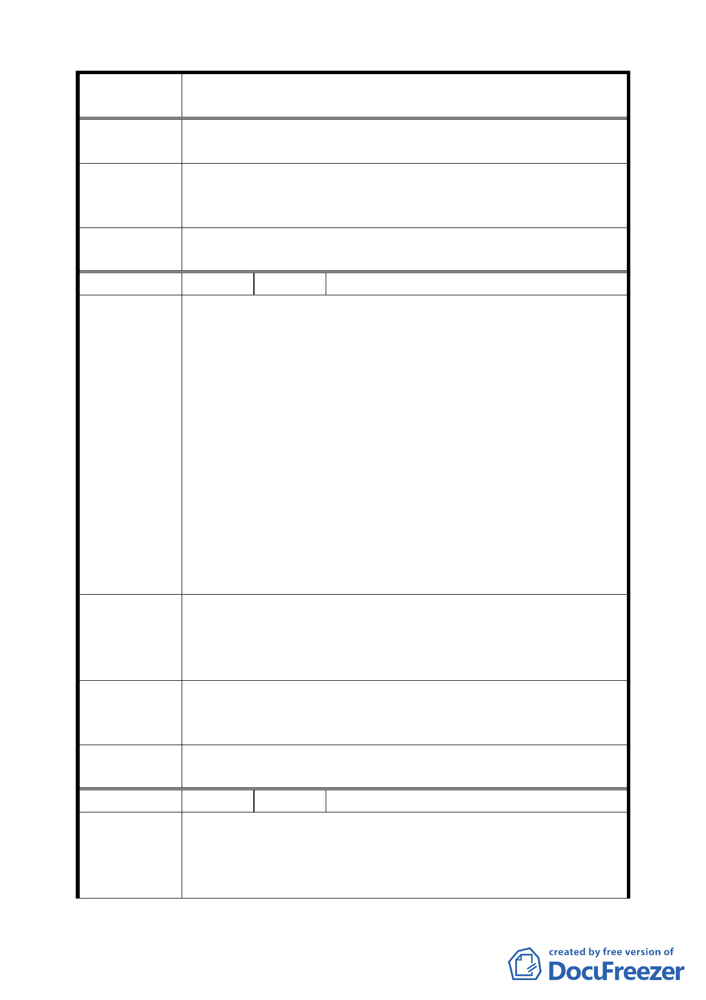

案 名 臺北市文山區都市計畫通盤檢討（主要計畫）案
二、增加都市綠地。
專案小組
審 查 結 論 本案屬公墓遷移事宜，移請市府殯葬管理處辦理。
（94.7.7）
委員會議
決議
依專案小組審查結論辦理。
編 號 １７ 陳情人 張小苑里長（09430098000）
一、興昌里是進入大安區必經要道（辛亥隧道出口東側），近
年因蒙捷運木柵線之便利，建商頗為青睞，然本里早期
大多規劃為住二、住三用地，且為老丙建、開放之大社
區，因此地處山坡地，道路皆為社區道路，政府未完全
徵收開發，故常造成車滿為患。
二、里內公訓中心及靈糧山莊經常有大型聚會，外車大量湧
陳情理由
（興隆）
入，周邊地區搭乘捷運者將座車暫停於本里，對於本里
停車位之不足，更是雪上加霜。
三、本里唯一的大空地，為辛亥國中、辛亥高中用地，此案
已懸宕多年，經徵收再撤銷，據瞭解已無闢建計畫，因
本里尚未興建之住宅仍多，道路使用面積不足，極欠缺
公園、公共活動場所，里內唯一公共空間，辛亥國小也
因腹地過小，未設置市內體運場，因此一遇雨天，居民
及學生即無處可去，造成本里活動空間受到極大之限制。
建請盡快將辛亥國中、高中用地變更為運動休閒中心或公園
建議辦法
（地下興闢停車場），不但可解決辛亥路兩側及辛亥捷運站附
近停車及接駁問題，更可增加文山區之生活機能、美化市容，
提升市民居住品質。
專案小組
審 查 結 論 同編號 14。
（94.7.7）
委員會議
決議
同編號 14。
編 號 １８ 陳情人 高逸松（09430074500）
建議位置：興安段四小段 195、200、201、203 等地號（興隆
陳 情 理 由 路三段 306 號）。
（ 興 隆 ） 建議理由：
國軍第一育幼院已廢除，機關用地無充分利用。
一二